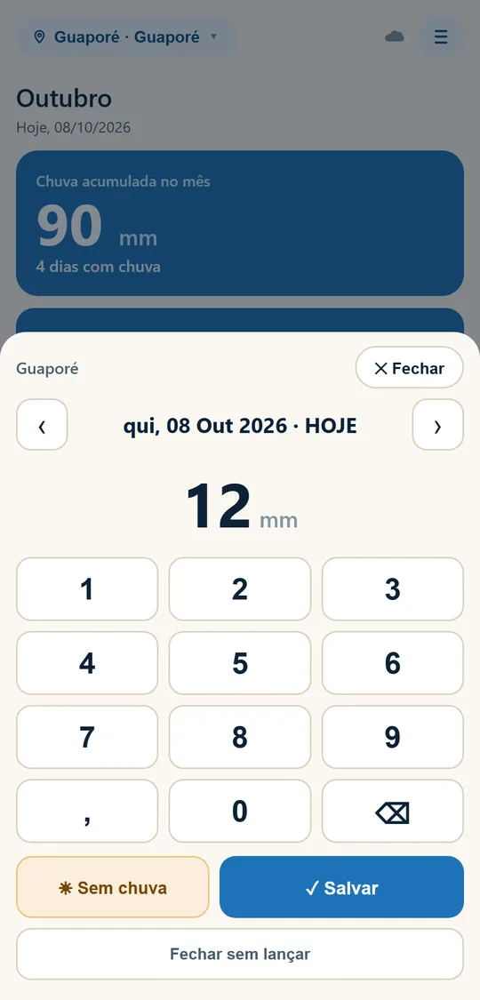
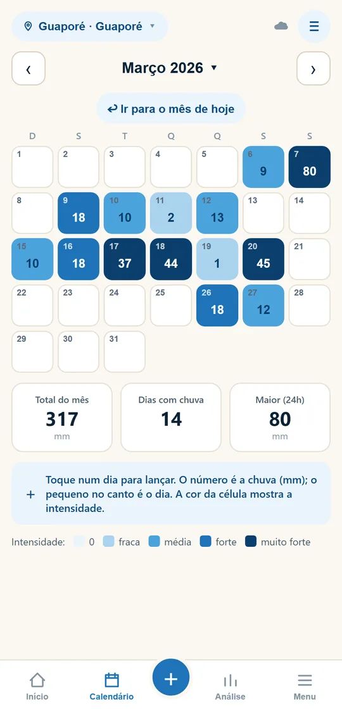
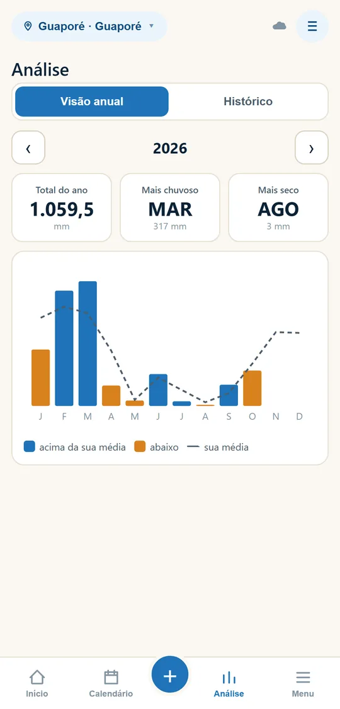
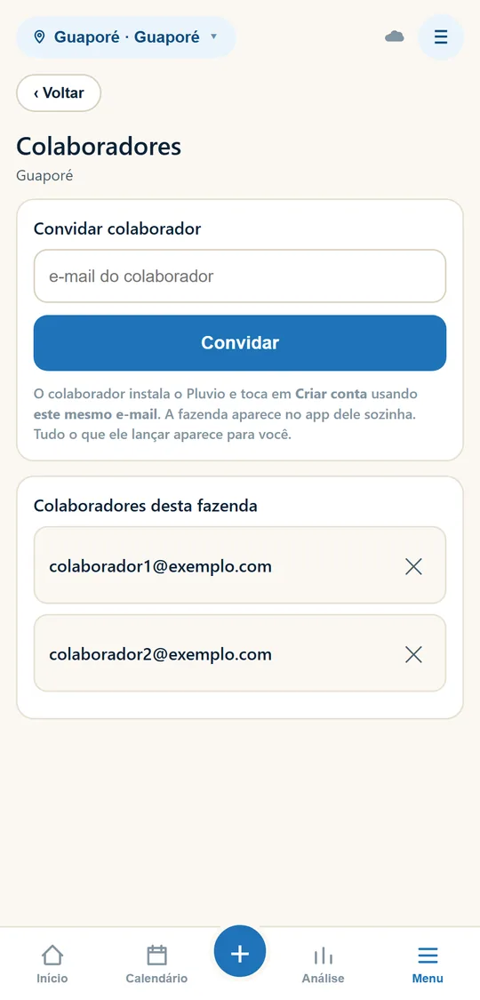
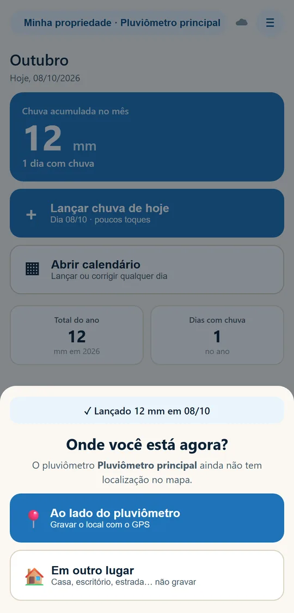

Registro de chuva na fazenda, no celular
Você lê o pluviômetro, digita os milímetros e pronto. O Pluvio guarda tudo na nuvem, monta o calendário e compara cada ano com a sua média.
iPhone
Baixe na App Store. No computador, aponte a câmera do iPhone para o código.
Baixar na App StoreGratuito. Funciona no campo mesmo sem sinal: o que você lança é enviado quando houver internet.
Comece em 3 passos
- Instale pelo botão acima, do iPhone ou do Android. Passo a passo da instalação.
- Crie sua conta com seu e-mail e uma senha que você escolhe. Não existe senha da Proest: a conta é sua.
- Lance a chuva: toque em ＋, digite os milímetros e toque em Salvar. Só os dias em que choveu.
Trocou de celular? Instale o Pluvio no aparelho novo e entre com o mesmo e-mail e senha. Seus dados voltam sozinhos.

O que o Pluvio faz

Calendário
A chuva de cada dia, com cores pela intensidade.

Análise
Total do ano, mês mais chuvoso e comparação com a sua média.

Equipe
Convide colaboradores: cada um lança no próprio celular.

Mapa
Grave o local de cada pluviômetro com o GPS.
Precisa de ajuda?
Como usar · Pluvio com colaboradores · Dúvidas frequentes · Fale com a gente